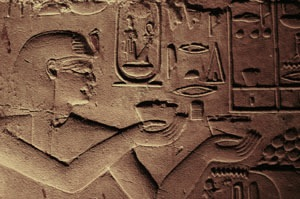
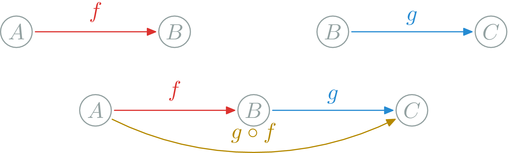

Abstraction Example: Numbers
Generalization: negative numbers
Negative numbers: ..., -3, -2, -1, 0, 1, 2, ... (100-50 BC): Debts, temperature

Something you see very often but in different instances.
Numbers: 1,2,3,... 3400 BC, real numbers 760 BC
Many different things can be understood with numbers
Manipulated with operators: =, <, >, +, ×, ...
Rational numbers: \(\frac{p}{q}\) (concept is prehistoric): more precise.
Negative numbers: ..., -3, -2, -1, 0, 1, 2, ... (100-50 BC): Debts, temperature
Irrational numbers: \(\mathbb{A}\), \(\mathbb{R}\) (500 BC → Pythogoras killed Hippasus because of \(\sqrt{2}\)!)
Complex numbers: \(\mathbb{C}\) (100 AD, then 16th century)
| Numbers | Set Theory (∞)/Abstract Algebra/Topology |
|---|---|
| \(\mathbb{N}\): \((+,0)\) | Semigroups |
| \(\mathbb{Z}\): \((+,0,\times,1)\) | Rings |
| \(\mathbb{Q}\) | Fields |
| \(\mathbb{R}\) | Complete Fields (topology) |
| \(\mathbb{C}\) | Algebræ |
| Modules,Vector Spaces, Monoids, ... |
& More general: more things are sets.
& More precise: clear distinction between concepts.
| Numbers | Sets | Categories |
|---|---|---|
| \(\mathbb{N}\): \((+,0)\) | Semigroups | ? |
| \(\mathbb{Z}\): \((+,0,\times,1)\) | Rings | ? |
| \(\mathbb{Q}\) | Fields | ? |
| \(\mathbb{R}\) | Complete Fields (topology) | ? |
| \(\mathbb{C}\) | Algebræ | ? |
| Modules,Vector Spaces, Monoids, ... | ? |
Extend & Merge different scientific fields
& More general: more things are Categories.
& More precise: better distinction between concepts.
Young field: 1942–45, Samuel Eilenberg & Saunders Mac Lane
Composition (∘): \(f:A\rightarrow B, g:B\rightarrow C\) $$g\circ f:A\rightarrow C$$
/
#